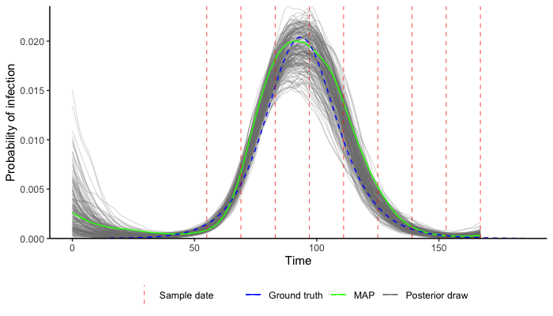

Setup
This package relies on the lazymcmc R package, which is used for the MCMC procedure. This is easy to do with devtools::install_github("jameshay218/lazymcmc"). However, for many analyses where multi-modal posteriors are suspected, a separate branch implementing parallel tempering is needed. I’d recommend you set this up as follows: - Install the lazymcmc base package using devtools::install_github as above. Any time this version is used, library(lazymcmc) is called. - Clone the parallel_tempering branch from here. Whenever this version is needed, then devtools::load_all("PATH TO LAZYMCMC PARALLEL TEMPERING REPO") is called instead.
It is possible to install the parallel tempering branch directly with devtools::load_all("jameshay218/lazymcmc",ref="parallel_tempering"), but I prefer to load the package locally until I merge the parallel tempering and master branches.
A number of generic R packages are also used throughout:
c("tidyverse","ggthemes","ggpubr","ggsci","data.table","patchwork",
"fitdistrplus","deSolve","lazymcmc","odin","doParallel","coda")Finally, this code uses compiled code with Rcpp, so you’ll need a C++ compiler (Rtools on Windows, Xcode on Mac). See here.
Getting started
The best way to get started is to read the accompanying vignette, which takes you through the process of using virosolver step by step.
The vignette can be found here.
Below is a snippet of code providing the absolute minimum R calls needed to get the MCMC framework up and running. I would strongly advise that you use the vignette instead and read the accompanying paper to avoid making early mistakes or getting started with flawed assumptions.
First, setup up all of the libraries and attach the example data.
library(virosolver)
library(lazymcmc)
library(tidyverse)
library(ggplot2)
## Attach simulated data
data(example_ct_data)
## Attach parameter table for MCMC control
data(example_gp_partab)Next, we define priors, resize the Markov chain Monte Carlo (MCMC) control table and set the MCMC chain length.
## Re-size the parameter control table to fit the data dimensions
## This is for the GP version
times <- 0:max(example_ct_data$t)
mat <- matrix(rep(times, each=length(times)),ncol=length(times))
t_dist <- abs(apply(mat, 2, function(x) x-times)) ## precomputed table of pairwise distances in time, used for the Gaussian process prior
par_tab <- example_gp_partab
par_tab <- bind_rows(par_tab[par_tab$names != "prob",], par_tab[par_tab$names == "prob",][1:length(times),])
pars <- par_tab$values
names(pars) <- par_tab$names
## Pull out the current values for each parameter, and set these as the prior means
means <- par_tab$values
names(means) <- par_tab$names
## Set standard deviations of prior distribution
sds_gp <- c("obs_sd"=0.5,"viral_peak"=2,
"wane_rate2"=1,"t_switch"=3,"level_switch"=1,
"prob_detect"=0.03,
"incubation"=0.25, "infectious"=0.5)
## Define a function that returns the log prior probability for a given vector of parameter
## values in `pars`, given the prior means and standard deviations set above.
## Prior for GP version
prior_func_gp <- function(pars, ...){
par_names <- names(pars)
## Viral kinetics parameters
obs_sd_prior <- dnorm(pars["obs_sd"], means[which(names(means) == "obs_sd")], sds_gp["obs_sd"],log=TRUE)
viral_peak_prior <- dnorm(pars["viral_peak"], means[which(names(means) == "viral_peak")], sds_gp["viral_peak"],log=TRUE)
wane_2_prior <- dnorm(pars["wane_rate2"],means[which(names(means) == "wane_rate2")],sds_gp["wane_rate2"],log=TRUE)
tswitch_prior <- dnorm(pars["t_switch"],means[which(names(means) == "t_switch")],sds_gp["t_switch"],log=TRUE)
level_prior <- dnorm(pars["level_switch"],means[which(names(means) == "level_switch")],sds_gp["level_switch"],log=TRUE)
beta1_mean <- means[which(names(means) == "prob_detect")]
beta1_sd <- sds_gp["prob_detect"]
beta_alpha <- ((1-beta1_mean)/beta1_sd^2 - 1/beta1_mean)*beta1_mean^2
beta_beta <- beta_alpha*(1/beta1_mean - 1)
beta_prior <- dbeta(pars["prob_detect"],beta_alpha,beta_beta,log=TRUE)
#########
## IMPORTANT
## Gaussian process prior, un-centered version
k <- pars[which(par_names=="prob")]
## Leave this - correct for uncentered version as per Chapter 14 Statistical Rethinking
prob_priors <- sum(dnorm(k, 0, 1, log=TRUE))
#########
nu_prior <- dexp(pars["nu"], 1/means[which(names(means) == "nu")],log=TRUE)
rho_prior <- dexp(pars["rho"], 1/means[which(names(means) == "rho")],log=TRUE)
obs_sd_prior + viral_peak_prior + wane_2_prior + tswitch_prior +
level_prior + beta_prior + prob_priors +
nu_prior + rho_prior
}
## MCMC chain options
mcmc_pars <- c("iterations"=200000,"popt"=0.44,"opt_freq"=2000,
"thin"=100,"adaptive_period"=100000,"save_block"=1000)Run the MCMC framework.
output <- run_MCMC(parTab=par_tab,
data=example_ct_data,
INCIDENCE_FUNC=gaussian_process_model,
PRIOR_FUNC=prior_func_gp,
mcmcPars=mcmc_pars,
filename="example",
CREATE_POSTERIOR_FUNC=create_posterior_func,
mvrPars=NULL,
OPT_TUNING=0.2,
use_pos=FALSE,
t_dist=t_dist)
print(output$file)Finally, read in the MCMC chain and use a pre-built function to compare the estimated incidence curve to the true incidence curve (blue line) from the simulated data. In practice you should run multiple chains and check for convergence, as in the vignette.
chain <- read.csv("example_univariate_chain.csv")
chain <- chain[chain$sampno > mcmc_pars["adaptive_period"],]
data(example_seir_incidence)
predictions <- plot_prob_infection(chain,nsamps=200, INCIDENCE_FUNC=gaussian_process_model,
solve_times=0:max(example_ct_data$t),obs_dat=example_ct_data,
true_prob_infection=example_seir_incidence,smooth=TRUE)
p_incidence_prediction <- predictions$plot + scale_x_continuous(limits=c(0,185))
p_incidence_prediction